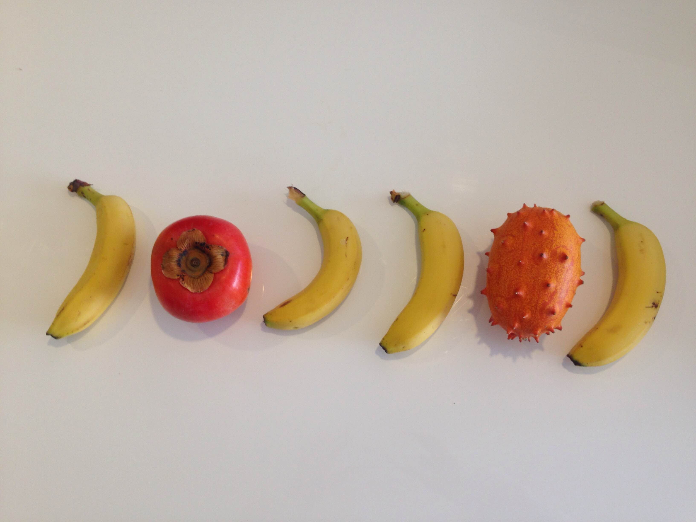
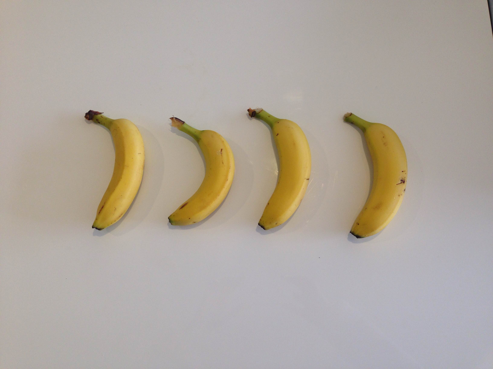
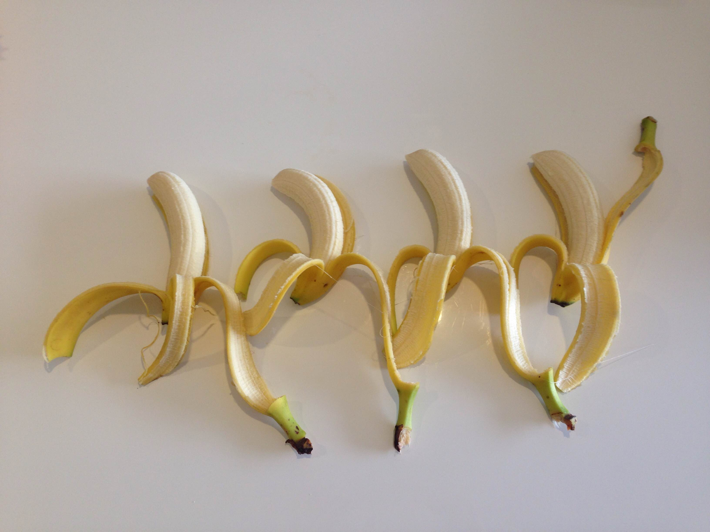

Tell your non-tech friend a story about a time you got blocked on a simple problem and solved a problem in an elegant way?
At some point last week, I was blocked on an assignment as was not using the bracket notation to access an object property, whereas this was needed. I read the error messages, which provided the line of the error, and that the operations I was trying to do couldn't be done on Undefined. Although it wasn't when I started learning programming, debugging now just feels normal, code mostly doesn't work on the fist run attempt, but it's ok, that's how you learn.
I read about currying in the Eloquent Javascript chapter on higher order functions, I used the concept to refactor this week's assignments, creating 1 makeColor function instead of makeBlue, makeOrange, makeGreen. Less repetition is more elegant.
Reflect on how confident you feel using the problem solving techniques and process:
- Pseudocode: Pseudocoding feels useful when detailed enough that it provides good structure, but not as detailed as to make you feel like you're losing too much time.
- Trying something: Always and forever!
- Rubber ducky method: My current rubber duck is 1m86, has brown hair, hazelnut eyes and is called Nic. Looking at getting myself a real rubber ducky, a pink one that makes funky noises when you press on it. Kidding aside, it's a good technique for major blockers. It feels like explaining to someone/something else activates a different part of your brain, and I usually find the missing piece of the puzzle.
- Reading error messages: This is my first step when debugging, it helps figuring out the "stupid little mistakes", like typos or syntax errors.
- Console.logging: my most often used technique. It might be more useful for me to learn how to use debugger statements?
- Googling: This usually doesn't help me find out what the problem is, but rather how to solve it.
- Asking your peers for help: I'm sometimes very stubborn, I like to figure things out on my own. This being said, I feel like it will be quite different when we work on group projects, and we share the responsibility of the outcome. I feel like it will be easier to ask for help.
- Asking coaches for help: If I'm really not OK, believe me, you'll hear about me.
- Improving your process with reflection: I'm convinced reflecting on your learning is worth the time and effort.
Explain to your non-tech friend: Array.prototype.filter(), .map() and .reduce()
Because a picture is worth a thousand words...
var myFruitArray = [banana1, persimmon, banana2, banana3, kiwano, banana4]
var filteredFruits = myFruitArray.filter(isBanana)
var mappedFruits = filteredFruits.map(peel)
var smoothie = mappedFruits.reduce(grind, almondMilk)